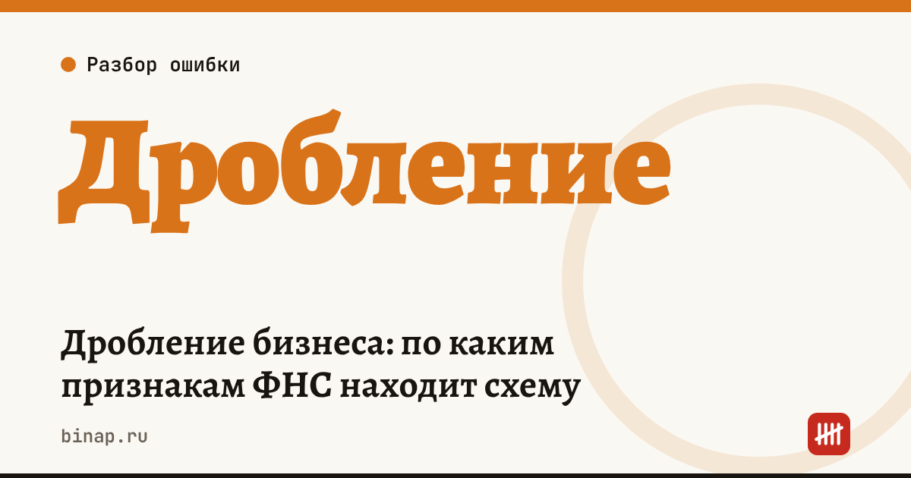

Дробление бизнеса: по каким признакам ФНС находит схему

Налоговая признаёт дроблением ситуацию, когда один бизнес формально разделён между несколькими ИП и компаниями, чтобы остаться на УСН и не платить НДС. Тогда налоги пересчитывают так, будто работала одна компания. Основание — п. 1 ст. 54.1 НК. Свежий пример — постановление Арбитражного суда Московского округа от 24 сентября 2026 года № Ф05-11871/26.
Коротко
- ИП разделил бизнес между взаимозависимыми лицами, чтобы сохранить УСН. Все участники «схемы», кроме одного, не платили НДС.
- Суды трёх инстанций согласились с ФНС. Группе доначислили НДФЛ, УСН и НДС.
- Ключевые признаки по делу: один бенефициар, единый производственный процесс, оплата друг за друга, формальное распределение персонала, общая выручка, договоры без реального исполнения.
- По мнению ФНС, признаками могут быть и общие учредители, бухгалтер, IP-адреса, телефоны, почта, сайт, вывески и контрагенты.
- Перечень не закрытый: в каждом случае налоговая оценивает, насколько участники самостоятельны.
Сроки, изменения и разборы для ИП и самозанятых — каждое утро в Telegram и MAX. Подпишитесь, чтобы не пропустить.
Что это значит
Само по себе несколько ИП или ООО в семье — не нарушение. Проблема возникает, когда за ними нет отдельного бизнеса, а разделение нужно только ради налоговой экономии.
В деле, которое разобрал «Гарант», суды увидели такие признаки:
- Один руководитель. Группа работала под руководством и в интересах одного бенефициара.
- Общий процесс. Производство было единым и неразрывным, участники платили друг за друга.
- Формальные сотрудники. Персонал распределили между участниками только на бумаге.
- Общая выручка. Её делили между организациями и ИП.
- Договоры для вида. Их заключали формально, условия не соблюдали.
ФНС, по данным «Гаранта», также считает доказательствами единой деятельности:
- общих учредителей или руководителей;
- единую кадровую политику;
- ведение учёта одним человеком;
- одинаковые IP-адреса и адреса;
- общие телефоны, почту, вывески и сайт;
- общих контрагентов, представителей и имущество.
Что грозит. Налоги пересчитывают по всей группе. В этом деле доначислили НДФЛ, УСН и НДС. Для понимания масштаба — пример (расчёт редакции, цифры условные). Два ИП на УСН «доходы» 6% с выручкой по 15 млн ₽ в год платили по 0,9 млн ₽ налога и не платили НДС. Если их объединят в один бизнес с выручкой 30 млн ₽, он превысит порог освобождения от НДС в 20 млн ₽, и налоги придётся пересчитать за все проверяемые годы. Порог освобождения от НДС на УСН мы разбирали в статье «Порог НДС для УСН — 20 млн ₽ до 2029 года».
Что сделать сейчас
Пройдите чек-лист по каждой компании и ИП в группе. Чем больше «да», тем выше риск.
- У компаний один фактический руководитель, который принимает решения за всех?
- Сотрудники переходят между компаниями без смены работы?
- Учёт всех компаний ведёт один бухгалтер или один сервис с одного входа?
- Банк и личный кабинет налоговой открывают с одного IP-адреса?
- Общие сайт, телефон, вывеска и почта?
- Компании платят друг за друга или делят выручку от одного клиента?
- Договоры между своими компаниями заключены, но не исполняются так, как в них написано?
- Вторую компанию открыли, когда первая подошла к лимиту УСН или порогу НДС?
Что можно сделать: развести бизнесы по-настоящему. У каждого — свой руководитель, сотрудники, клиенты и бухгалтерия. Договоры между своими — по рыночным ценам и с реальным исполнением. Если направления развести нельзя, посчитайте, что выгоднее — одна компания с НДС или риск доначислений. Сравнить варианты поможет статья «ИП или ООО в 2026–2027 годах».
Если налоговая уже вынесла решение, его можно обжаловать. Как это сделать и в какие сроки, мы описали в статье «Как обжаловать решение налоговой проверки».
Частые вопросы
Можно ли держать несколько ИП в одной семье? Можно, если у каждого свой реальный бизнес: клиенты, сотрудники, расходы и решения. Дробление — это когда разделение формальное и нужно только ради налогов.
Один бухгалтер на две компании — уже дробление? Само по себе нет. Но ФНС считает общий учёт одним из признаков. Если совпадают и другие признаки, риск растёт.
Какая статья НК запрещает дробление? Пункт 1 ст. 54.1 НК: нельзя уменьшать налоги, искажая сведения о фактах хозяйственной жизни.